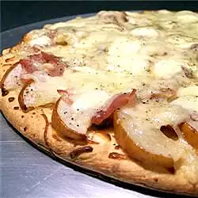

Pear and Prosciutto Pizza

Description
This gourmet-style pizza is both sweet and savory.
Ingredients
- 6 cloves garlic
- ½ tablespoon olive oil
- 2 ripe pears, halved and cored
- 1 tablespoon olive oil
- all-purpose flour for dusting
- 1 unbaked pizza crust
- 1 tablespoon cornmeal for dusting
Steps
- Preheat oven to 375 degrees F (190 degrees C). Place the garlic in a small square of aluminum foil. Drizzle 1/2 tablespoon of olive oil over the garlic. Wrap foil around garlic to seal.
- Roast the garlic in the preheated oven until soft, about 20 minutes. Smash roasted cloves with a fork.
- Place the pears in a bowl with 1 tablespoon olive oil; toss to coat. Arrange pear slices on a baking sheet.
- Bake in hot oven until soft, 10 to 15 minutes.
- Raise oven temperature to 400 degrees F (200 degrees C). Preheat a pizza stone or baking sheet in the oven.
- Lightly dust a flat surface with flour. Roll the prepared pizza crust dough out onto the prepared surface. Dust a baking sheet with cornmeal. Lay the dough onto the prepared baking sheet. Spread the mashed garlic onto the dough; top with the Swiss cheese. Arrange the pears, prosciutto, and mozzarella cheese onto the pizza. Season with salt and pepper. Brush the edges of the crust with the 1/2 tablespoon olive oil.
- Bake in preheated oven until the cheese is melted and crust is golden brown, 15 to 20 minutes.